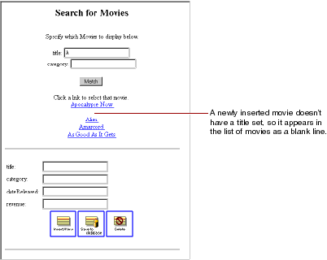

Creating a WebObjects Database Application
PATH
WebObjects 4.0 Documentation >
Getting Started With WebObjects
 Table of Contents
Table of Contents  Previous Section
Previous Section
Refining Main.wo
You may have noticed that your application doesn't list fetched movies in any particular order. Also, when you insert a new movie, it appears in the list of movies as a blank line.

In this section you'll tidy up the user interface to fix these things and a few others. Specifically, you'll:
You can also put the query part of the page in a table and capitalize Main.wo's text field labels-for example, use "Title" instead of "title" and "Date Released" instead of "dateReleased."
Table of Contents  Next Section
Next Section